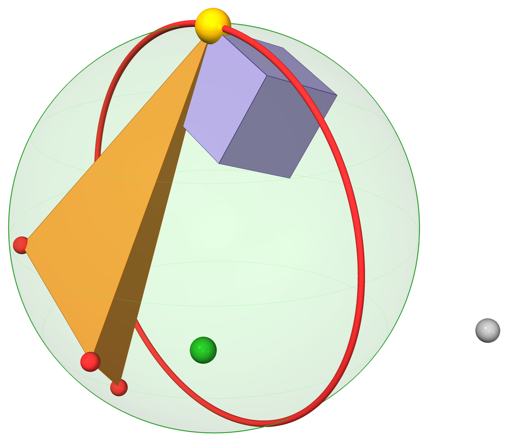
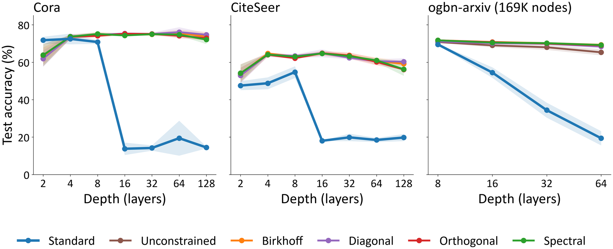
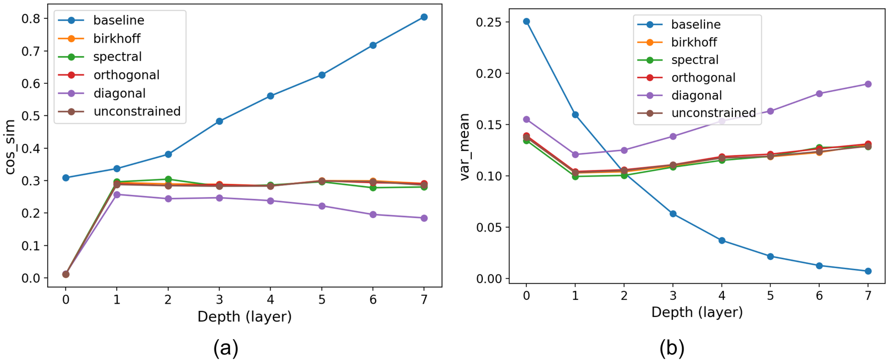
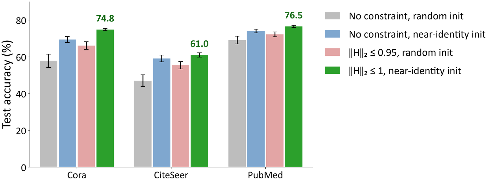

Abstract
Graph neural networks exhibit a fragile relationship with depth, as adding layers leads to rapid homogenization of node representations (over-smoothing). Recent manifold-constrained approaches using doubly stochastic matrices address this issue, but the fundamental principle underlying their success remains unclear. This study investigates whether doubly stochasticity is essential or exemplifies a broader geometric principle for stable residual propagation in deep GNNs. We formalize three axioms to define residual mixing matrices as contractive monoids. We instantiate this framework through three manifolds (Orthogonal Group, Diagonal Contraction Monoid, Spectral Norm Ball) and evaluate them across nine node-classification benchmarks using four GNN backbones. Results demonstrate that contractive-monoid constraints maintain stable accuracy and low representational collapse at extreme depths, while standard GNNs degrade sharply beyond moderate depth, even when tuned. This work establishes that stable residual propagation arises from contractive, compositional structure anchored at identity, revealing a larger design space for deep GNN architectures with the same stability guarantees.
Three axioms define a contractive monoid
Each node carries \(n\) parallel streams, and the residual path applies an \(n \times n\) mixer \(H_\ell\) at every layer:
\[ x_i^{\ell+1} = H_\ell\, x_i^{\ell} + H^{\text{post}}_{i,\ell}\, \mathrm{GNN}\big(H^{\text{pre}}_{i,\ell} x_i^{\ell}, \{x_j^{\ell}\}_{j \in \mathcal{N}(i)}; W_\ell\big). \]
After \(L\) layers the residual path applies the product \(H_L \cdots H_1\), so what matters is how mixers behave under composition. We ask the family \(\mathcal{M}\) of allowed mixers for three properties:
A1. Non-expansiveness
\(\|H\| \le 1\)
No mixer amplifies the signal, so \(\|H_L \cdots H_1\| \le 1\) at every depth.
A2. Compositional closure
\(H_a, H_b \in \mathcal{M} \Rightarrow H_a H_b \in \mathcal{M}\)
The L-layer mixer stays in \(\mathcal{M}\), so the family's structure holds at every depth.
A3. Identity anchoring
\(I \in \mathcal{M}\)
Training can start near the identity, and depth never shrinks the function class: \(\mathcal{F}_L \subseteq \mathcal{F}_{L+1}\).
One principle, many monoids

Theory: stability holds for every monoid
Scope (Prop 4.7). Stream mixing stays within 1-WL for every monoid: the axioms buy stability, not extra distinguishing power.
Results
Stable up to 128 layers

No representation collapse

Both identity anchoring and contraction matter

Harder benchmarks
8-layer GCN with 4 streams (ogbn-arxiv at 64 layers). Best per row in bold green.
| Benchmark | Standard | Unconstr. | Birkhoff | Diagonal | Orthogonal | Spectral |
|---|---|---|---|---|---|---|
| Roman-Empire (Acc) | 47.1 | 67.3 | 72.0 | 69.6 | 72.4 | 73.4 |
| Amazon-Ratings (Acc) | 37.6 | 43.7 | 46.8 | 45.1 | 47.5 | 47.4 |
| Minesweeper (AUC) | 77.6 | 86.4 | 89.2 | 87.2 | 88.8 | 89.3 |
| Tolokers (AUC) | 73.7 | 79.9 | 81.8 | 80.4 | 81.9 | 82.8 |
| Questions (AUC) | 69.3 | 73.6 | 74.7 | 73.8 | 75.2 | 75.9 |
| Peptides-func (AP, higher is better) | .599 | .638 | .662 | .649 | .665 | .676 |
| Peptides-struct (MAE, lower is better) | .341 | .285 | .274 | .276 | .272 | .266 |
| PascalVOC-SP (F1, higher is better) | .176 | .238 | .265 | .245 | .264 | .266 |
| ogbn-arxiv, 64 layers (Acc) | 19.4 | 65.3 | 69.3 | 68.4 | 69.0 | 69.2 |
All runs use a controlled protocol (fixed hyperparameters across methods) to isolate the effect of the mixer constraint, not to reach state-of-the-art absolute accuracy.
Takeaways
- Stable deep residual propagation comes from contractive, closed, identity-anchored mixing, not from doubly stochasticity.
- Birkhoff (mHC) is one member of a larger family that shares the same guarantees.
- The spectral norm ball is the most expressive choice and is often the most accurate. Learned spectral mixers carry 16 to 35% negative entries, a region that doubly stochastic constraints exclude.
BibTeX
@inproceedings{sinha2026contractive,
title = {Contractive Monoids: The Algebra Behind Stable Residual
Propagation in Deep Graph Neural Networks},
author = {Sinha, Rohit and Kumar, Saroj},
booktitle = {Advances in Neural Information Processing Systems},
year = {2026}
}